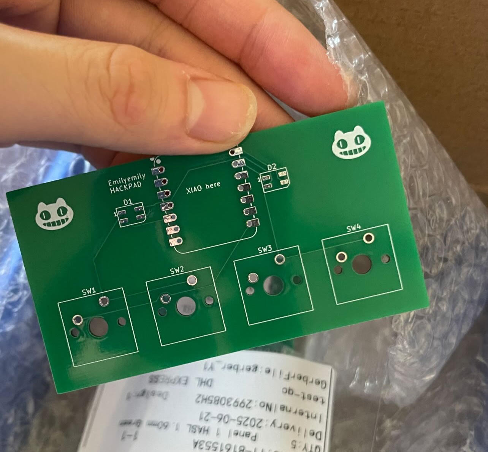
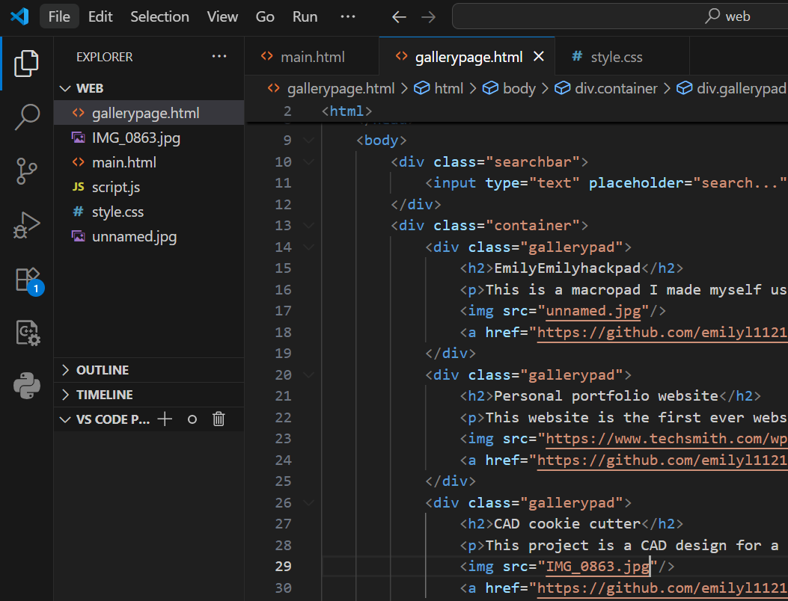
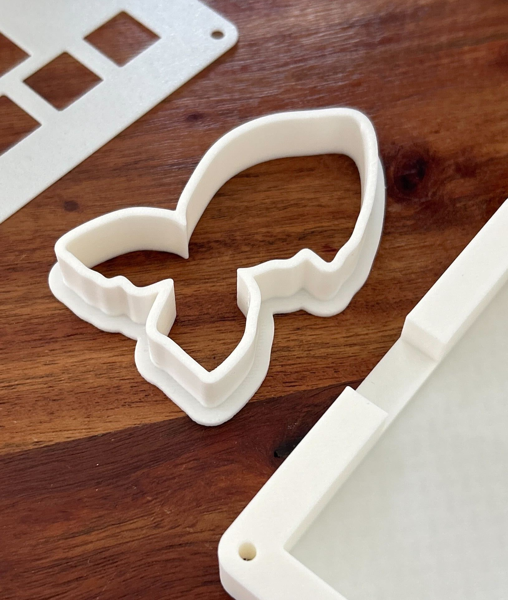

This is a macropad I made myself using basic PCB knowledge and simple CAD designs. It has 4 basic keys that allows you to quickly access your music settings on you laptop and keys such as screenshot. KMK firmware is used for this project.
 GithubThis website is the first ever website I made using HTML and CSS. It's the one you are looking at right now! It's still in development so it's not final.
 GithubThis project is a CAD design for a cookie cutter! It's a image of a fish and it can be used to make fish cookies. It's made with Onshape.
 Github